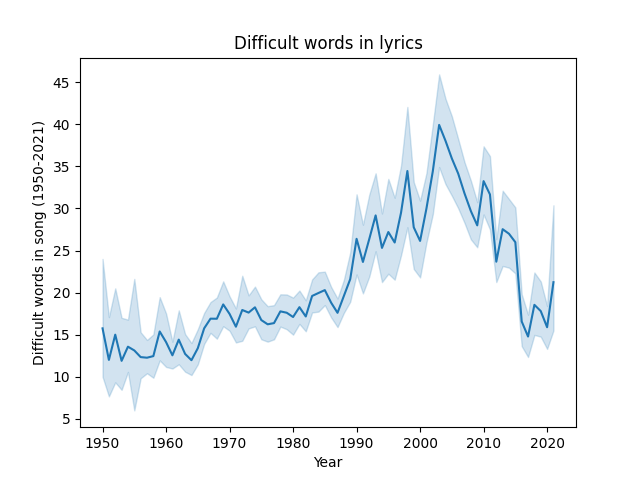

Exploring data is a huge process and takes a lot of time and digging into all the variables in the datasets gathered. In the
case of this project, around 30 music related variables were gathered for analysis, which made the data exploring process chaotic. For this
reason, i decided to split the exploration into three seperate parts:
• Analyzing audio features
• Analyzing the lyrics
• Analyzing the industry as a whole (band types, etc.)
• Analyzing the statistics behind the features
How have the musical elements of popular songs changed in the last century ?
As mentioned in the data gathering section, the Spotify API provided a lot of music related features. As an initial
analysis, the four features picked for analysis (with how Spotify defines them):
• Speechiness: Speechiness detects the presence of spoken words in a track. The more exclusively speech-like
the recording (e.g. talk show, audio book, poetry), the closer to 1.0 the attribute value."Rap God" by Eminem
is an example of a song with high speechiness.
• Instrumentalness: Predicts whether a track contains no vocals, the closer the instrumentalness value is to 1.0, the greater
likelihood the track contains no vocal content. Hans zimmer, bach, or any other composer's tracks are very high in instrumentalness.
• Duration: The duration of the track in milliseconds.
• Danceability: Danceability describes how suitable a track is for dancing based on a combination of musical elements including tempo, rhythm stability, beat strength, and overall regularity.
A value of 0.0 is least danceable and 1.0 is most danceable. "Billie Jean" is a song with high danceability.
Figure 1 below has four line plots that summarize how these features have changed in Billboard’s top 100 yearly songs ever since the
1950s.
Fig.1 - The evolution of audio features over decades.
The most evident thing from Figure 1 is that all of these variables have gone through drastic changes
over the years. However, the more interesting thing to note from this graph is the period where trends
shifted from one state to the other.
Speechiness had very low values for music ever since 1950, where things drastically changed in 1990 and the
Billboard saw a seemingly exponential rise in speechiness levels among popular music. This does make sense as
the 90s era is famous for the rise of hip hop (more details on that later).
Durations of popular songs were steadily increasing since the 1960s and peaked in 1990, where it started
to drastically decrease to one of the lowest points it has ever been in 2021. The reasons behind this decline
might be related to several social factors. For example, the decrease in people's attention spam over the years
(more data to be collected on that) might have built this intolerance for longer songs. Another factor that
is more recent is TikTok's rise to mainstream media, which might have caused people getting used to quick "snippets" of
music that last between 10 and 30 seconds. These are just theories that need more data collection to be properly evaluated.
Instrumentalness of songs seems to be the least volatile among those features, but it also showcased a significant change in the 90s.
Finally, after a small dip around the late 1980s, danceability saw a steady increase again during the 90s.
Another point worth studyuing was the "literacy and intellect" of popular songs, which is why the "difficult words" per songs
feature was analyzed below.

Fig.2 -Number of difficult words per song over decades.
To support the previous observations, the 90s also seem to have been the era where the number of difficult words per (popular) song
drastically increased up until 2005 (according to Figure 2), where the drop has been happening ever since (all most all time low level in 2021). Same as song duration
the reasons behind this drop (2005 onwards) might be social in nature where people have started valuing more superficial forms of music and media (more details later).
The two main takeaways from this graph are:
• Popular music has in fact changed drastically over the years.
• The 1990s seem to be the era of the musical revolution.
How has genre popularity changed ?
In part one, the plots showed significant changes in the audio features of popular throughout the years. This section will focus on how artists and the genre they offer have also
changed over the same time frame. The significance of such an analysis is the fact that eventually people will listen only to what the artists are making, making the artists (and the
record industry) themselves the trend setters and breakers.
 Fig.3 -Song genres distribution over decades.
Fig.3 -Song genres distribution over decades.
Figure 3 further supports the idea that the 90s is the decade were significant changes in the music industry happened. Up until that
decade, the Billboard's Top 100 chart was almost predominantly rock music, the era of Guns n Roses, Scorpions, Metallica, just to name a few.
Despite the 80s Billboard top 100 chart being 85% taken by rock music, this number dropped to 27% in the 90s. The 90s is what some people refer to
as the "beginning of the end" for rock music, as its dominance in the charts being taken over by hip hop, electronic music, and pop music, which
(except for electronic music) have become the dominant genres in the Billboard throughout the last decade.
Changes of this magnitude do not happen overnight and are not coincidental, so with the proper data and approach, one could understand why the 90s
was so revolutionary and what might be the root cause(s) behind this cultural shift in popular music. (More exploration to be done in the
coming weeks).
Has the message behind popular songs changed ?
After understanding how audio features of popular music have changed over the years and having a look at how the industry has changed
over time, the next relevant music related data gathered worth analyzing was the lyrics and how they have changed over that time frame. The
lyrics of a song carry all its meaning, and they are what resonates the most with listeners. In some way, the lyrics that people consume say something
about them and their moods,interests,etc. Below are word clouds for the lyrics of popular songs for each decade from the 1950s until now (50s, 60s, 70s, ...2020s). Word clouds
size words based on their frequencies, meaning the largest word in the word cloud is the one that is found the most number of times in the inputted text,
which in this case is a decade's popular song lyrics.
Despite having very significant differences in audio features and genres within the last 8 decades, the most popular words
in lyrics seem to have remained constant over that time period. The word clouds above are almost identical, with the main words
in popular music lyrics being "Love" , "Want", "Baby", "Come", "Time".
This similarity is in fact logical. No matter how much things change in life, one of the few constants is humans' connection to love and intimacy,
which are things the vast majority of humans thrive to find, making it logical for songs (and other forms of art) to center around that theme.
Despite the themes and messages conveyed by the lyrics being almost constant, it is very well known that the wording, tone, and overall ways in which
the messages are being conveyed have changed over the years. To elaborate, it has become widely accepted that modern music is much more "vulgar" than
older music, with a lot more profanity, racism, and offensive language present in lyrics nowadays. Below is a visual observation at how this type of
language has found itself into popular music.
 Fig.4 -Profanity and racism in songs over decades.
Fig.4 -Profanity and racism in songs over decades.
Almost all trend shifts seen so far happened in the 1990s, and the rise and prominence of the words "Shit", "F***", "N****", and "B****" in
popular music comes as no exception. This comes in line with previous observations, since these words are mostly found in hip hop and pop music (more data
to be added on that later), which have been proven to experiencing a skyrocket rise ever since the 90s.
Are there any mathematical relationships between song features ?
All the previous parts served as a good understanding of how the music industry and the music itself have changed since 1950s, but this part
will focus more on the statistics aspect of the data, as it is a very important step to properly understand the data and how it could be
used for machine learning.
The first step was developing a correlation matrix between all features of the dataset, but this was not visually pleasant at all since we have around
30 variables, resulting in a 30x30 matrix. Consequently, i decided to only include the audio features that have some sort of correlation with each other.
The plot can be found below:
 Fig.5 -Correlation heatmap of audio features.
Fig.5 -Correlation heatmap of audio features.
Some of the more obvious relationships conveyed by figure 5 are:
• Valence and danceability have a very high positive correlation (0.55): A very logical relationship as valence is defined (by Spotify) as
the musical positiveness conveyed by a track, which would definitely be high for songs that are "danceable".
• Acousticness and (danceability and energy) have a high negative correlation (-0.26 and -0.55): Since acoustic tracks are calmer in nature and not as loud
as other tracks, they definitely tend to be less danceable and have less energy.
Generally, all relationships in this matrix fall within the realm of common sense and mathematically
verified some assumptions about music i had.
Next, i used box plots for the features used in the correlation heatmap to get a better sense of the statistics behind each feature individually.
Fig.6 -Audio features box plot.
First of all, all of the features (that have correlations with each other) move very steadily together. Unlike
other uncorrelated variables (speechiness, duration, etc.) which have been previously visualized to have experienced drastic changes over the years, correlated variables
moved together in a much more stable manner, the min max and mean of these variables seem to have move very steadily. A possible indication from this is the fact
that these are the 6 most important variables when it comes to making a song popular, and all the other variables change along with time and genre.
Second of all, the long whiskers from all box plots indicate high variability within the variables, which might be a custom to having different genres
within a decade (Example: jazz and disco music have very different danceability values)
Finally, the box plots indicate a significant presence of outliers in variables like "Acousticness", "Difficult words", and "Loudness", which might
have had an impact on correlation values and might also have an impact at later stages like machine learning, where they might be dealt with at that stage.
How do modern audiences react to older classics when exposed to them ?
All of the analysis so far has proven that music popularity is very trend based and each era enjoys a certain
type of music. However, just like in anything in life, outliers exist and some songs get very popular in eras where
they were not supposed to. This section focuses on exploring three of these very recent outliers and how were they received
by the general public. The three examples where the following:
• Something in the way ~ Nirvana (initially released in xxxx), played in The Batman (2022).
• Master of Puppets ~ Metallica (initially released in xxxx), played in Stranger Things Season 4 (2022).
• Running up that hil ~ Kate Bush (initially released in xxxx), played in Stranger Things Season 4 (2022).
The performance of these songs when they got played in their respective movie/series was nothing short of amazing:
• Something in the way saw a 2200% increase in streaming a couple of weeks after The Batman was released.
• Master of Puppets saw a 650% increase in streaming a couple of weeks after Stranger Things season 4 was released.
• Running up the hill saw a 9000% increase in streaming a couple of weeks after Stranger Things season 4 was released.
However, the most interesting part is how different these songs were from the remaining songs on the Billboard at the time:
 Fig.7 -Outlier performances in 2022
Fig.7 -Outlier performances in 2022
The most interesting aspect from figure 7 is how different each of the three songs are compared to the other songs featured on the Billboard add their time in terms of audio features. This huge difference is very interesting as it shows that even though the general population follows trends, they do have the capacity to enjoy outliers of the trends, all it takes is proper exposure, since The Batman and Stranger Things both are In the top 5 movies/series in 2022.
The question that arises from these figures is what is the reason people enjoyed these outliers? Is it the way they were used in the movie/show? Is it nostalgia that led to many people revisit these songs? Or is it just the fact that many people heard these songs for the first time and legitimately really liked them? These are all very broad questions that need further investigation and analysis to properly understand and answer, yet they are very relevant nonetheless.
Conclusion
This section showcased how drastically music has changed throughout the last couple of decades from an audio perspective, specifically in the 1990s,
which was the decade with the most influence in terms of change in music. Moreover, the correlations found between audio features served as a stepping stone
towards feature engineering and model building, as properly understanding the relationships between features is key to building an efficient model. Finally, this
section also explored how people positively react to older classic music when properly exposed to it. The next step in this project was to take all of these findings
and use them appropriately for model building.